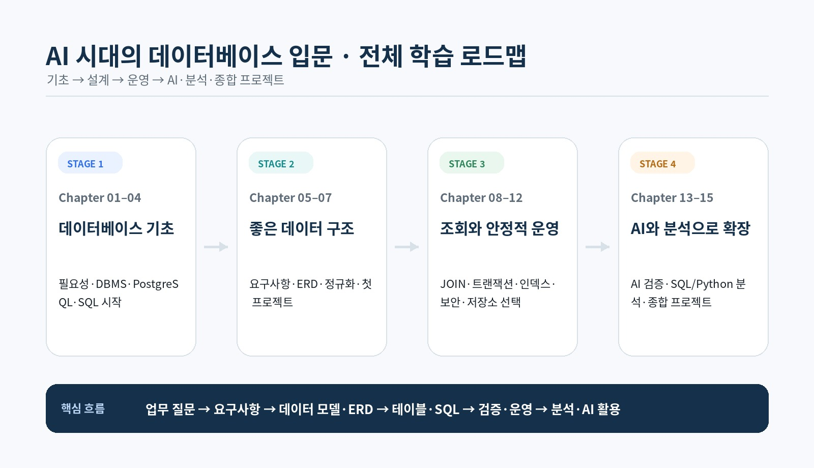
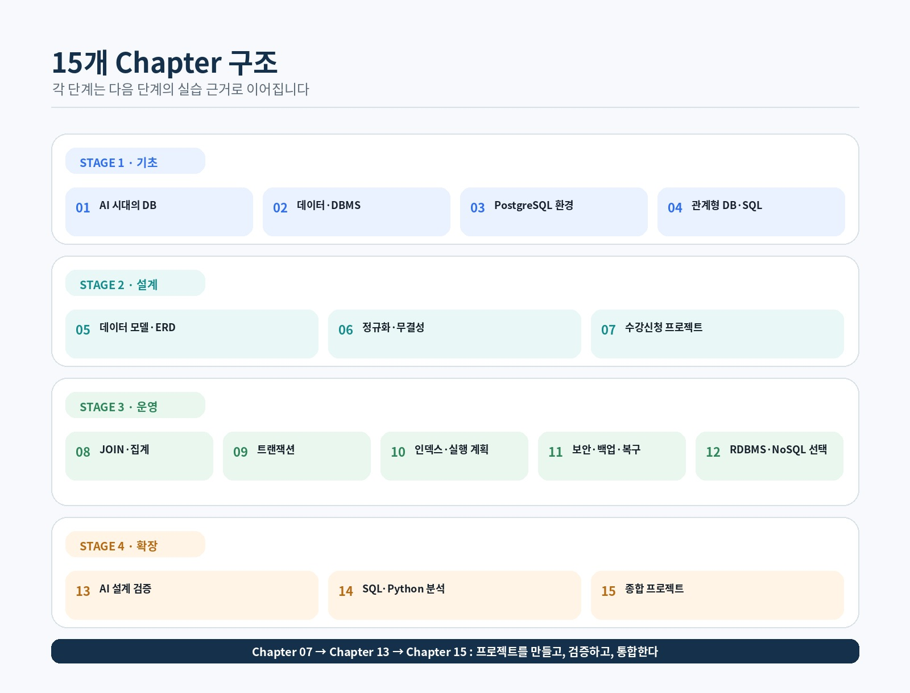
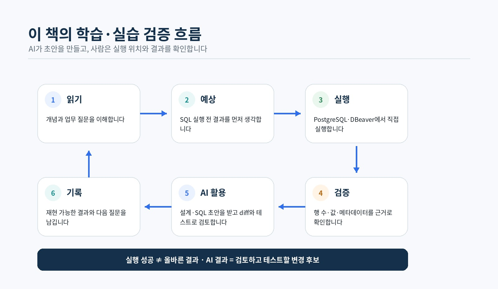

READER 01
데이터베이스 초보자
테이블, 키, 관계, SQL을 처음부터 차근차근 이해하고 싶은 독자
AI가 SQL을 만들어 주는데도 데이터베이스를 배워야 할까요? 이 책은 이 질문에서 시작합니다. AI가 초안을 만들고, 사람은 데이터의 의미와 실행 결과를 검증합니다.
목표는 SQL 문법을 외우는 데 그치지 않고, 현실의 정보를 구조화하고 결과가 실제 질문과 일치하는지 판단하는 힘을 기르는 것입니다.
이 책은 데이터베이스를 처음 배우는 일반 독자와 예비 개발자를 위한 실습형 입문서입니다. 데이터 분석이나 AI 활용을 위해 SQL과 데이터 구조를 이해하려는 독자도 대상으로 합니다.
SQL 경험이 없어도 시작할 수 있으며, 프로그래밍 경험이 없어도 Chapter 01~04를 순서대로 읽을 수 있습니다. 이후 장에서는 PostgreSQL 실습이 이어지므로 예제를 직접 실행하고 결과를 확인하며 학습하는 것을 권장합니다.
테이블, 키, 관계, SQL을 처음부터 차근차근 이해하고 싶은 독자
서비스 요구사항을 실제 데이터 구조와 PostgreSQL 구현으로 연결하고 싶은 독자
SQL 집계와 데이터 구조를 이해하고 Python·pandas 분석까지 확장하고 싶은 독자
ChatGPT와 Codex가 만든 설계·SQL을 검증할 수 있는 기준을 갖추고 싶은 독자
AI는 요구사항 초안을 정리하고 테이블과 관계 후보를 제안하며, SQL·DDL 초안과 테스트 SQL 후보를 빠르게 만들 수 있습니다. 오류 메시지를 설명하거나 코드와 저장소 수정을 지원하는 일에도 유용합니다.
하지만 업무 규칙, 한 행의 의미, 키와 관계, NULL의 의미와 삭제 정책은 사람이 최종 판단해야 합니다. 개인정보와 권한, SQL 결과의 정확성, 운영 환경에서 변경 SQL을 실행해도 되는지도 실제 데이터와 실행 맥락을 바탕으로 결정해야 합니다.
현실의 사용자, 주문, 강의, 질문 같은 정보를 테이블과 관계로 표현합니다.
SQL이 실행되는지를 넘어 결과가 실제 업무 질문과 일치하는지 검증합니다.
트랜잭션, 인덱스, 권한, 백업과 복구로 데이터의 정확성과 안전성을 지킵니다.
AI가 만든 ERD, DDL과 SQL을 그대로 신뢰하지 않고 테스트와 실행 결과로 검토합니다.
15개 Chapter는 네 단계로 진행됩니다. 앞 단계에서 만든 구조와 실행 증거가 뒤 단계의 실습 기준으로 이어지도록 구성했습니다.


Chapter 07에서 첫 데이터베이스를 직접 완성하고, Chapter 13에서 AI가 만든 결과를 실행 증거로 검증한 뒤, Chapter 15의 종합 프로젝트에서 전체 내용을 통합합니다.
온라인 강의 수강신청 DB에서 요구사항, ERD, 정규화, 무결성, PostgreSQL 구현과 자동 검증을 연결합니다.
정상·경계·실패 테스트와 메타데이터, diff를 근거로 AI 설계·DDL·SQL 초안을 사람이 승인합니다.
AI 튜터링 질문 관리 서비스에 설계·트랜잭션·성능·권한·복원·SQL·pandas 분석을 통합합니다.
프로젝트 완료는 파일이 존재하는 상태가 아니라, 다른 사람이 같은 순서로 실행해 같은 결과를 확인할 수 있는 상태입니다.

| 표시 | 의미 |
|---|---|
| 핵심 학습 | 처음 배우는 독자가 우선 이해하고 직접 확인할 내용 |
| 선택 학습 | 필요하거나 관심이 있을 때 추가로 살펴볼 내용 |
| 심화 학습 | 운영·성능·보안 등 실무 확장을 위한 내용 |
처음 읽는 독자는 핵심 학습을 중심으로 Chapter 01부터 순서대로 진행하는 것을 권장합니다. 선택·심화 학습을 모두 완료하지 않아도 다음 장으로 진행할 수 있습니다.
AI 도구의 세부 기능과 화면은 바뀔 수 있습니다. 이 책에서는 특정 버튼이나 기능보다 AI가 만든 결과를 사람이 검증하는 작업 방식을 중심으로 설명합니다.